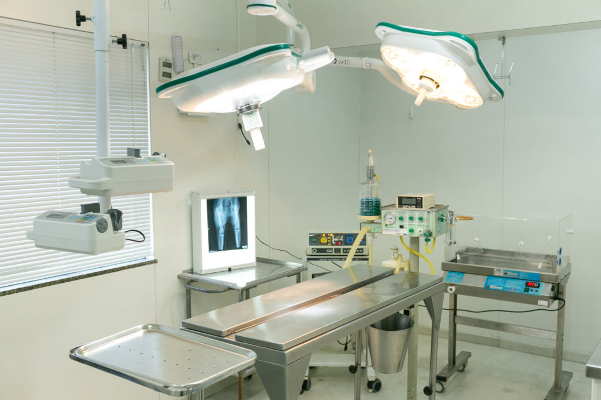

Sua Clínica 24 Horas
Com o objetivo de cuidar do bem-estar do seu melhor amigo, a Peters Vet possui uma equipe especializada de médicos veterinários que priorizam o atendimento humanizado com excelência, a saúde e o cuidado com os animais. Com equipamentos de última geração e estrutura moderna que proporciona aos clientes conforto e praticidade, realiza consultas médicas, exames laboratoriais e cirurgias. Além do cuidado com pets em geral, a Peters Vet é especializada no atendimento de animais silvestres. Na Peters Vet você encontra tudo o que seu amigo precisa: Clínica Veterinária, Estética e Pet Shop. É a união do cuidado e do bem-estar com o amor pelos bichos.
Médicos Especialistas
A clínica santo pet acredita que cada pet é unico, por esse motivo não adotamos receitas de bolo para o tratamento Cada tratamento é realizado com base em exames, fundamentamos o nosso diagnóstico para que você saiba exatamente o que está acontecendo com o seu pet. Além disso se tratando de um caso complexo, o seu pet será encaminhado para atendimento especializado. O especialista tem a capacidade de observar em profundidade o quadro do seu pet, sugerindo os exames mais adequado e o melhor tratamento para o quadro dele.
-Clínica Veterinária-
para o bem estar do seu pet